App dựng video bán hàng TikTok: quay source → lấy kịch bản đối thủ → lồng giọng đọc tiếng Việt → chữ và phụ đề → xuất video dọc 9:16.
sk-ant-). Key này phát sinh chi phí theo lượt dùng: không gửi cho người ngoài công ty.Kiểm tra: bấm nút Start, gõ cmd, Enter để mở cửa sổ Command Prompt. Gõ lệnh dưới rồi Enter:
python --version
Hiện dòng Python 3.12.x hoặc Python 3.13.x là đúng. Nếu hiện số cao hơn (ví dụ 3.14) thì cài lại theo bước trên. Nếu cửa sổ Microsoft Store tự mở ra hoặc báo “not recognized”, xem mục C1 ở Phần C.
Cách nhanh (khuyên dùng):
PowerShell, bấm Windows PowerShell.Y rồi Enter.winget install --id Gyan.FFmpeg -e
cmd mới, gõ ffmpeg -version rồi Enter. Hiện dòng bắt đầu bằng “ffmpeg version …” là đúng.ffmpeg rồi chép vào ổ C:\. Kết quả phải có file C:\ffmpeg\bin\ffmpeg.exe.environment, chọn Edit the system environment variables, rồi bấm Environment Variables….C:\ffmpeg\bin. Bấm OK 3 lần để đóng hết.cmd mới và kiểm tra bằng ffmpeg -version.D:\ (máy không có ổ D thì gõ C:\), rồi bấm Extract.D:\TikTokVideoStudio, bên trong có file chay_app.bat.D:\Tài liệu\…).D:\TikTokVideoStudio và bấm đúp vào file chay_app.bat.Trên trang app, bấm tab Cài đặt ở góc trên:
0. Muốn đọc nhanh hơn kiểu TikTok thì đặt 10–20.Ô Azure và FPT.AI để trống, trừ khi quản lý đưa key riêng.
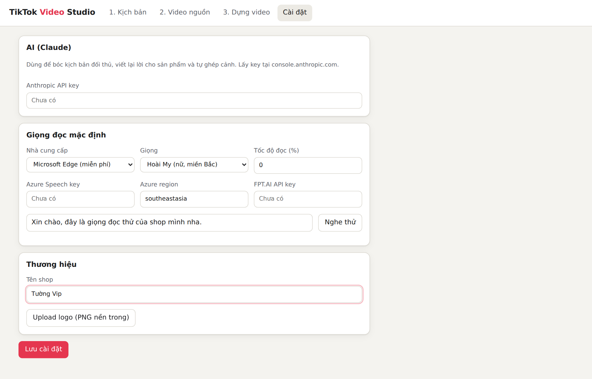
App có hai cách làm. Cách nhanh (khuyên dùng) là tab Tạo hàng loạt: thả video đã quay, chọn kịch bản, bấm một nút, app tự dựng cả loạt video. Cách thủ công gồm 3 tab 1. Kịch bản, 2. Video nguồn, 3. Dựng video, dùng khi cần làm riêng hoặc chỉnh từng video.
Bấm đúp biểu tượng chay_app.bat (ngoài Desktop). Đợi trình duyệt mở trang app. Nhớ giữ cửa sổ đen mở.
Tab đầu tiên Tạo hàng loạt mở sẵn khi vào app, làm 3 bước từ trên xuống:
[kiểm tra] chưa điền.Phần mềm tự làm: mô tả video bạn quay (lần đầu), ghép cảnh quay vào từng kịch bản, tạo giọng đọc, chữ, phụ đề, nhạc, rồi dựng lần lượt từng video. Mỗi video khoảng 1–2 phút tuỳ máy, bạn có thể để máy chạy và làm việc khác. Đừng đóng cửa sổ đen. Đóng trình duyệt thì app vẫn chạy; nếu lỡ tắt app, mở lại và bấm Tiếp tục.
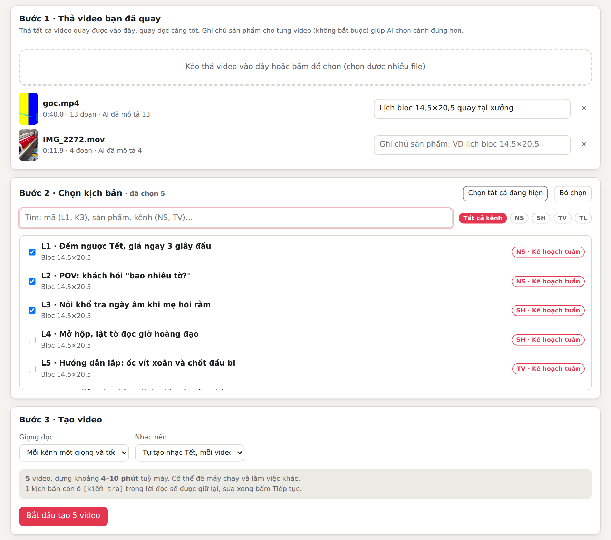
Kết quả: danh sách từng video hiện ngay bên dưới. Mỗi video có nút Xem, Tải về và Mở để chỉnh (chuyển sang tab Dựng video để đổi cảnh hoặc lời đọc rồi xuất lại). Nút Tải tất cả (ZIP) tải gói gồm các video cùng file noi_dung_dang.txt (caption, hashtag, điều cần kiểm tra) và can_quay_them.txt.
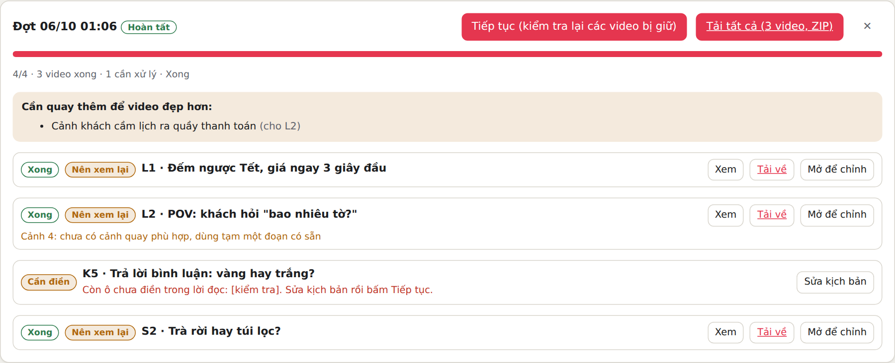
Ở Bước 2, bấm dòng ✨ Để AI xem video bạn vừa thả rồi tự viết kịch bản cho đúng video đó. Chọn số kịch bản (2–5), kênh sẽ đăng, và gõ vào ô Thông tin được phép nói những gì AI được phép nhắc tới (giá, khổ, số tờ, chất liệu, nơi in). Bấm Phân tích video và viết kịch bản rồi đợi vài phút.
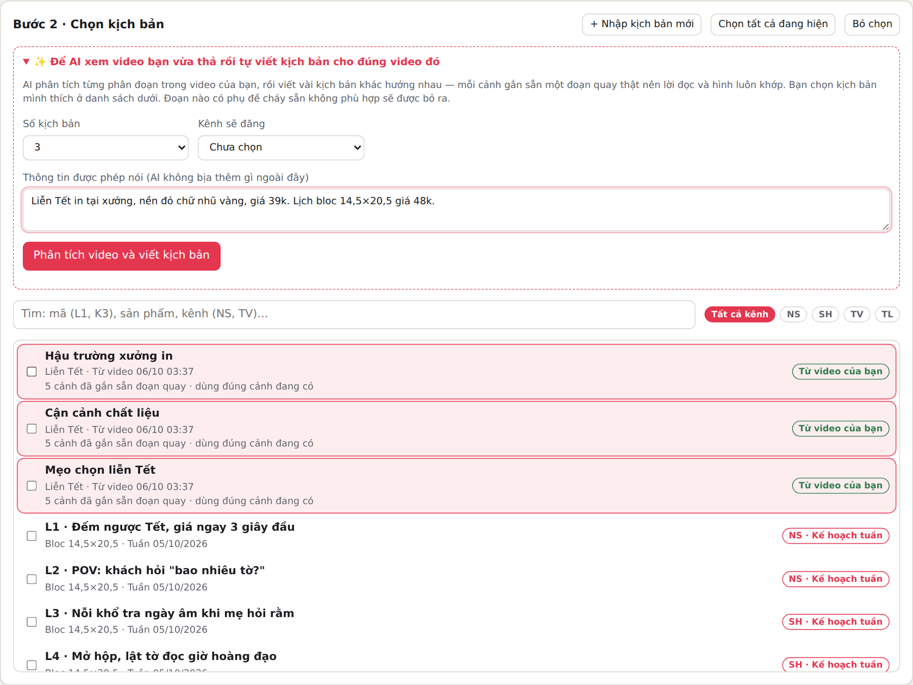
Mặc định, trước khi máy dựng video, AI đọc lại cả kịch bản cùng với đoạn quay đã chọn cho từng cảnh rồi sửa cho khớp. Nó soát:
Những chỗ đã sửa xem được bằng Xem … cảnh đã soát lại. Muốn dựng nhanh và đỡ tốn AI thì đổi ô Soát lại trước khi dựng sang Dựng ngay.
Quay lại màn hình video cũ, hoặc dùng lại file đã dựng, thì trong hình còn chữ chèn, sticker, watermark, mũi tên hay vòng tròn khoanh sản phẩm. App tự xử lý, bạn không phải làm gì:
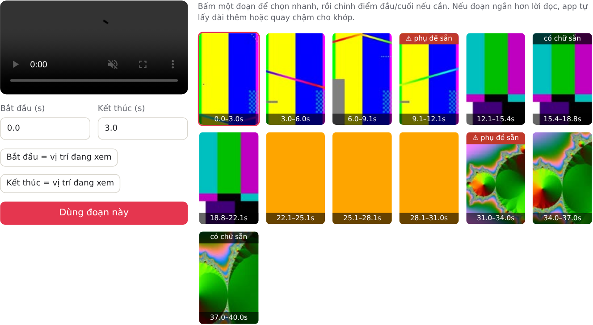
Thư viện kịch bản không bắt bạn phải quay đúng từng cảnh. Với mỗi kịch bản, app ghép cảnh quay của bạn vào từng cảnh. Cảnh nào chưa có video khớp, AI viết lại cảnh đó theo video bạn đã quay: chọn đoạn quay có sẵn, rồi chỉ nói và chỉ hiện những gì thấy được trong đoạn đó, hoặc thông tin đã có trong kịch bản gốc và ghi chú video (giá, cỡ, số tờ...). AI không được bịa giá, thông số, đánh giá hay công dụng.
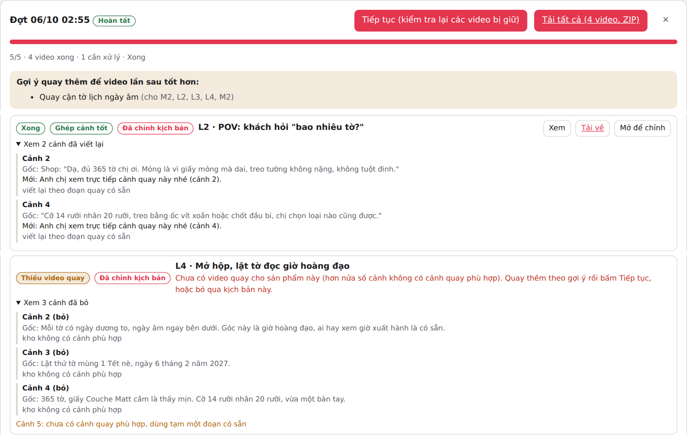
| Nhãn | Ý nghĩa và cách xử lý |
|---|---|
| Ghép cảnh tốt | AI thấy cảnh quay đúng sản phẩm và đúng việc cần quay. Vẫn nên xem nhanh trước khi đăng. |
| Nên xem lại | Có cảnh chỉ dùng tạm được hoặc chưa thật khớp. Bấm Xem, nếu chưa ưng thì bấm Mở để chỉnh và đổi đoạn video cho cảnh đó. |
| Cần điền | Lời đọc còn ô [kiểm tra]. Bấm Sửa kịch bản, điền thông tin thật, lưu, quay lại tab Tạo hàng loạt bấm Tiếp tục. |
| Đã chỉnh kịch bản | Có cảnh đã được viết lại hoặc bỏ cho khớp video bạn quay. Bấm Xem … cảnh đã viết lại để kiểm tra từng câu. |
| Thiếu video quay | Hơn nửa kịch bản không có cảnh quay phù hợp (thường vì chưa quay sản phẩm đó). Quay thêm theo gợi ý rồi bấm Tiếp tục, hoặc bỏ qua. |
| Gợi ý quay thêm | Khung vàng liệt kê cảnh nên quay thêm để video lần sau tốt hơn. Không bắt buộc. |
Vào tab Cài đặt, thẻ Chữ trên video:
Thẻ Nhạc nền của shop: bấm Upload nhạc để thêm file mp3 hoặc m4a. Nhạc đã tải lên dùng lại được cho mọi video, chọn ở ô Nhạc nền (Bước 3 hoặc tab Dựng video).
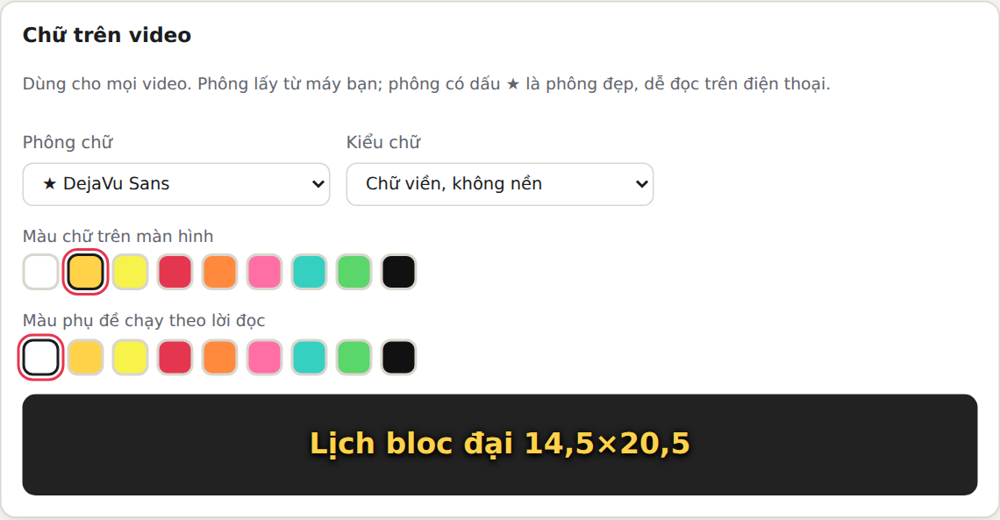
Thư viện không cố định. Khi có tài liệu kịch bản mới (ví dụ kế hoạch tuần sau), bấm + Nhập kịch bản mới ở Bước 2 của tab Tạo hàng loạt, hoặc vào tab 1. Kịch bản, thẻ Nhập kịch bản từ file hoặc link:
[kiểm tra] được giữ nguyên, AI không tự điền.Cách 1: Dùng kịch bản có sẵn. Thư viện có sẵn kịch bản mẫu KB1–KB3 và 40 kịch bản của kế hoạch tuần (nhãn Kế hoạch tuần, có mã như L1, K3, T2, S4 và chữ cái đầu là kênh NS, SH, TV, TL). Gõ vào ô Tìm để lọc, ví dụ K5, lich bloc, TV. Bấm vào một kịch bản để xem từng cảnh: quay gì, lời đọc, chữ trên màn hình, số giây.
[kiểm tra] trong lời đọcMột số kịch bản có chỗ để trống như [kiểm tra] hoặc [giá giỏ]. Xem hàng thật hoặc trang sản phẩm rồi sửa câu đó bằng thông tin thật ở tab Dựng video. Nếu để nguyên, app báo đỏ và không cho xuất video, vì giọng AI sẽ đọc luôn chữ “kiểm tra”. Giá trong kịch bản lấy theo giỏ hàng ngày 05/10, cần so lại với giá lúc đăng.Cách 2: Bóc kịch bản từ video đối thủ đang bán chạy.
Viết lại cho sản phẩm nhà: mở kịch bản, kéo xuống phần Viết lại cho sản phẩm của tôi, điền tên sản phẩm, giá, quy cách, điểm nổi bật, rồi bấm Viết lại bằng AI. Bản mới có nhãn Đã viết lại. Nếu AI báo Cần bổ sung (ví dụ thiếu giá), hãy điền thêm thông tin.
Có thể sửa tay mọi ô trong bảng các cảnh rồi bấm Lưu thay đổi.
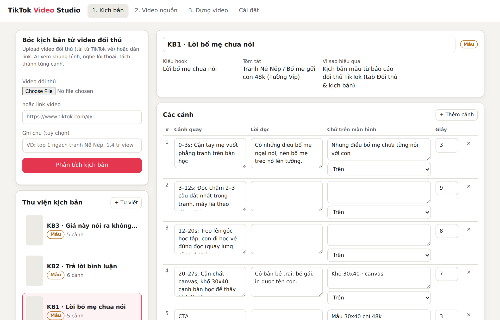
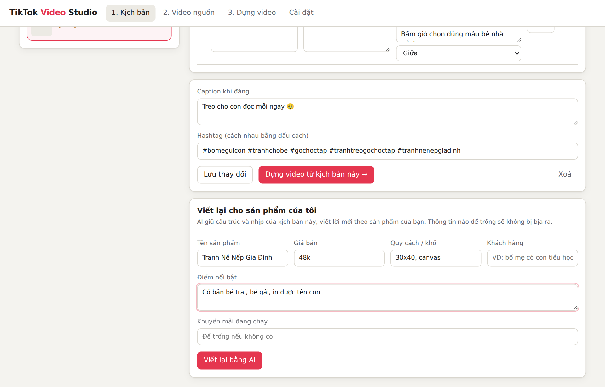
Quay theo cột “Cảnh quay” của kịch bản:
Chuyển video từ điện thoại sang máy tính bằng cáp, Google Drive, hoặc Zalo PC. Nếu dùng Zalo, phải gửi dạng file: gửi dạng video thì Zalo nén làm mờ.
Upload: ở tab 2. Video nguồn, kéo thả các video vào khung (chọn được nhiều file cùng lúc). Mỗi video hiện nhãn Đang xử lý; khoảng vài chục giây sau sẽ hiện ảnh và số đoạn. App tự chia video thành các đoạn ngắn để chọn cảnh. Video quay bằng iPhone (HDR) được chỉnh màu tự động.
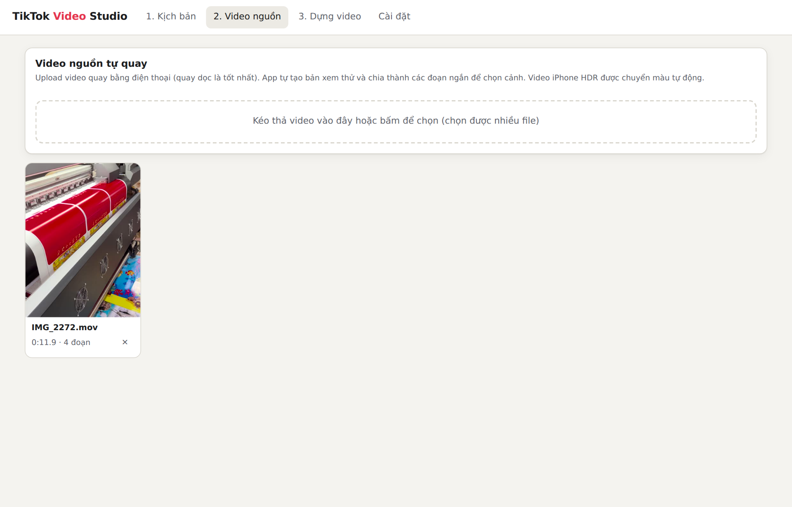
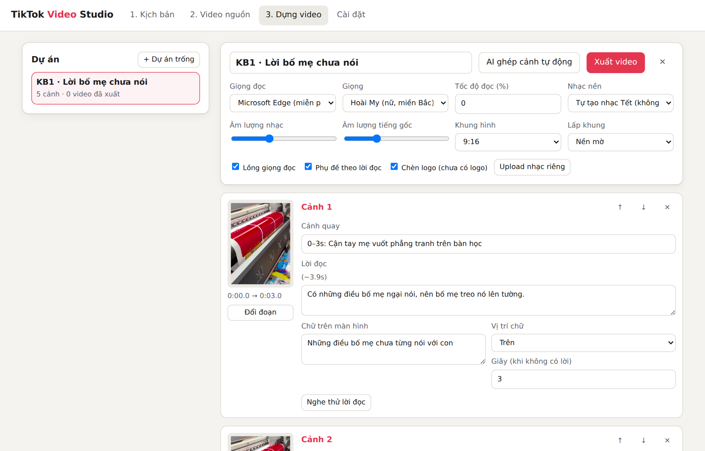
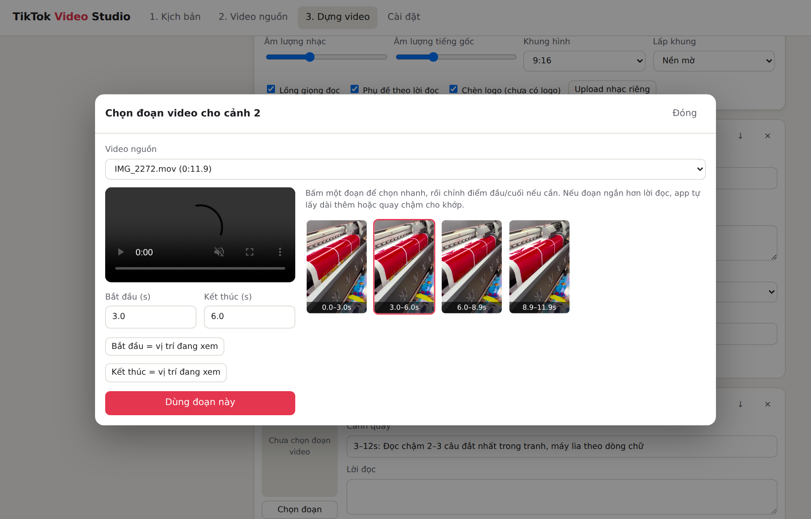
D:\TikTokVideoStudio\data. Không xoá thư mục này.data sang ổ khác, NAS hoặc Google Drive. API key không nằm trong thư mục này mà lưu riêng trong %APPDATA%\TikTokVideoStudio, nên sao lưu data không làm lộ key. Cài lại Windows thì phải nhập lại key.data\projects\. Có thể mở trực tiếp bằng File Explorer.| # | Hiện tượng | Cách xử lý |
|---|---|---|
| C1 | Cửa sổ đen báo “Chua cai Python”, gõ python thì Microsoft Store tự mở, hoặc báo “not recognized” |
Python chưa được thêm vào PATH. Cài lại Python và tick “Add python.exe to PATH” (bước A1). Nếu Store vẫn mở, vào Settings, chọn Apps, rồi Advanced app settings, rồi App execution aliases, và tắt 2 dòng python.exe / python3.exe. |
| C2 | Cửa sổ đen báo “Canh bao: chua thay ffmpeg”, hoặc lúc xuất video báo lỗi | Làm lại bước A2. Sau khi cài xong phải đóng cửa sổ đen và bấm đúp chay_app.bat lại. |
| C3 | “Loi cai thu vien, kiem tra mang Internet” | Kiểm tra mạng, rồi chạy lại chay_app.bat. Nếu vẫn lỗi, xoá thư mục .venv trong thư mục app rồi chạy lại. |
| C4 | Trình duyệt báo “This site can’t be reached” / không kết nối được | Cửa sổ đen đã bị đóng. Bấm đúp chay_app.bat để mở lại, đợi vài giây rồi tải lại trang (F5). |
| C5 | Cửa sổ đen báo “address already in use” hoặc “port 8000” | App đã đang chạy ở một cửa sổ đen khác. Dùng cửa sổ đó, hoặc đóng hết cửa sổ đen rồi mở lại. |
| C6 | Bấm Nghe thử giọng đọc báo lỗi “Không gọi được giọng Edge” | Kiểm tra Internet. Nếu mạng công ty chặn dịch vụ này, báo quản lý để lấy key Azure hoặc FPT.AI và nhập ở tab Cài đặt. |
| C7 | Nút AI bị mờ, hoặc báo “API key không hợp lệ” | Vào tab Cài đặt, dán lại API key đúng và bấm Lưu. Nếu báo “giới hạn tần suất” thì đợi vài phút rồi thử lại. |
| C8 | Video nguồn hiện nhãn Lỗi | File có thể bị hỏng hoặc chưa tải xong. Chép lại file từ điện thoại rồi upload lại. |
| C9 | Xuất video báo “Cảnh X chưa chọn đoạn video” | Cảnh đó chưa có đoạn. Bấm Chọn đoạn ở cảnh đó, hoặc bấm AI ghép cảnh tự động. |
| C10 | Chữ tiếng Việt trong video bị lỗi font, mất dấu | Chụp màn hình video lỗi, gửi quản lý. |
| C11 | Bóc kịch bản báo “Không tải được video từ link” | Mở link trên trình duyệt xem còn xem được không. Video riêng tư, đã xoá hoặc cần đăng nhập thì không tải được: hãy tải video về máy rồi upload file. Nếu mọi link đều lỗi, tắt app và mở lại để app tự cập nhật công cụ tải. |
| C12 | Xuất video báo “Còn ô chưa điền trong lời đọc…” | Cảnh được nêu còn chữ trong ngoặc vuông như [kiểm tra]. Sửa câu đó bằng thông tin thật rồi xuất lại. |
| C13 | Windows hiện “Windows protected your PC” khi bấm chay_app.bat | Bấm More info, rồi Run anyway. Đây là cảnh báo bình thường với file tự tạo trong công ty. |
| C14 | Bấm tạo hàng loạt báo “Đang có một đợt tạo video chạy” | App chỉ chạy một đợt tại một thời điểm. Đợi đợt đang chạy xong, hoặc bấm Dừng ở đợt đó (app dừng sau khi dựng xong video đang làm). |
| C15 | Vài video ở trạng thái Cần điền hoặc Lỗi khi chạy xong | Cần điền: sửa kịch bản như bảng ở bước 2 phần B. Lỗi: đọc dòng chữ đỏ bên dưới tên video (thường là mạng hoặc giọng đọc), khắc phục rồi bấm Tiếp tục, app chỉ làm lại các video bị lỗi. |
| C16 | Trên đầu app có khung vàng “ffmpeg trên máy thiếu chức năng…”, hoặc xuất video báo “thiếu bộ lọc” | Máy đang dùng bản ffmpeg rút gọn. Cài bản đầy đủ theo bước 2 phần A (winget install --id Gyan.FFmpeg -e hoặc bản full ở gyan.dev), đóng cửa sổ đen rồi mở lại app. |
| C17 | Cửa sổ đen báo “Canh bao: nen dung Python 3.12 hoac 3.13” hoặc “Loi cai thu vien” | Bản Python quá mới hoặc quá cũ. Gỡ Python, cài Python 3.12.x như bước 1 phần A, xoá thư mục .venv trong thư mục app rồi mở lại. |
| C18 | Nhập kịch bản báo “Link cần đăng nhập…” hoặc “Không tải được link” | App chỉ đọc được link mở công khai. Đặt chia sẻ “Bất kỳ ai có link” (Google Docs), hoặc xuất tài liệu ra file Word/PDF rồi upload. |
| C19 | Nhập kịch bản báo “Cần nhập Anthropic API key…” hoặc “Không tìm thấy kịch bản video nào” | Nhập API key ở tab Cài đặt. Nếu tài liệu đúng là có kịch bản mà vẫn báo không thấy, thử xuất lại thành file Word hoặc PDF, hoặc dán nội dung vào ô “dán nội dung kịch bản”. |
| C20 | Video ở trạng thái Thiếu video quay | Hơn nửa kịch bản chưa có cảnh quay phù hợp (thường chưa quay sản phẩm đó). Quay thêm theo mục “Gợi ý quay thêm”, thả vào Bước 1 rồi bấm Tiếp tục; hoặc bỏ qua kịch bản. |
| C21 | Trình duyệt báo “Failed to fetch”, hoặc hiện thanh đỏ “Mất kết nối với app” | Nghĩa là trang không nói chuyện được với app. Làm lần lượt: (1) Nhìn cửa sổ đen chay_app.bat: nếu đã tắt hoặc có dòng chữ đỏ, bấm đúp chay_app.bat mở lại và giữ cửa sổ đen mở. Trang tự nối lại, video và dữ liệu đã có không mất. (2) Nếu cửa sổ đen vẫn mở: bấm Ctrl + F5 để tải lại trang, rồi nhìn số phiên bản góc trên bên phải có đúng bản mới không. (3) Tải video báo lỗi: app tự thử lại 3 lần; vẫn lỗi thì kiểm tra ổ đĩa còn trống ít nhất vài GB và không để app trong thư mục OneDrive. (4) Vẫn lỗi: vào tab Cài đặt, bấm Xem nhật ký lỗi, chụp màn hình gửi người hỗ trợ (nếu trang không mở được thì gửi ảnh cửa sổ đen). Mẹo: đừng bấm chuột vào bên trong cửa sổ đen khi đang chạy; nếu lỡ bấm, bản mới đã tự chống đứng, bản cũ thì bấm phím Enter để nó chạy tiếp. |
| C22 | Không thấy file .MOV trong hộp chọn file, hoặc video hiện nhãn Lỗi “Không đọc được video trong file…” | Bản mới khai rõ đuôi .MOV nên hộp chọn file phải hiện; nếu vẫn không thấy, đổi ô loại file ở góc dưới hộp chọn sang All files. Nhãn Lỗi nghĩa là file hỏng hoặc chép chưa xong từ điện thoại (kích thước nhỏ bất thường): chép lại file từ điện thoại rồi thả lại, các video khác không bị ảnh hưởng. Video 4K dài vài trăm MB cần vài phút để xử lý, đợi nhãn Đang xử lý biến mất. |
| C23 | Báo “Tài khoản Anthropic đã hết tiền”, hoặc hiện khối chữ lạ có “credit balance is too low” | Key AI dùng tới đâu trả tiền tới đó và tài khoản đã hết. Vào console.anthropic.com, mục Plans & Billing, nạp thêm, rồi quay lại bấm Tiếp tục — app làm tiếp đúng chỗ dở dang. Chưa nạp được thì vẫn tạo video được, nhưng app chỉ ghép cảnh theo thứ tự chứ không hiểu nội dung, và không tự viết được kịch bản. |
| C24 | Trong video có chữ lạ, chữ cụt (ví dụ “nu”) hoặc chữ của video cũ | Bản mới tự bỏ mấy mẩu chữ vô nghĩa và tự đặt lại lời cho đúng ô. Nếu vẫn thấy chữ lạ, đó là chữ cháy sẵn trong file quay: thả file quay gốc thay vì file đã dựng. Chỉ có file đã dựng thì để ô Đoạn quay còn chữ hoặc sticker cũ ở Luôn xào nấu để app cắt bỏ dải chữ cũ khỏi khung hình. |
| C25 | Bấm Phân tích video và viết kịch bản báo “Video đã quay chưa đủ phân đoạn” hoặc “AI chưa viết được kịch bản nào” | Cần ít nhất 3 đoạn quay dùng được. Thả thêm video vào Bước 1 (hoặc quay dài hơn, nhiều góc hơn), và gõ thông tin sản phẩm vào ô Thông tin được phép nói rồi làm lại. Nếu nhiều đoạn bị bỏ vì có phụ đề cháy sẵn, hãy quay mới thay vì quay lại màn hình video cũ. |
Nếu muốn chỉ cài trên 1 máy mạnh và các máy khác trong văn phòng dùng qua trình duyệt:
--host 0.0.0.0, rồi bấm OK. Mở app bằng shortcut này. Khi Firewall hỏi, bấm Allow access cho Private networks.cmd, gõ ipconfig, rồi tìm dòng IPv4 Address (ví dụ 192.168.1.25).http://192.168.1.25:8000 (thay bằng IP vừa xem).